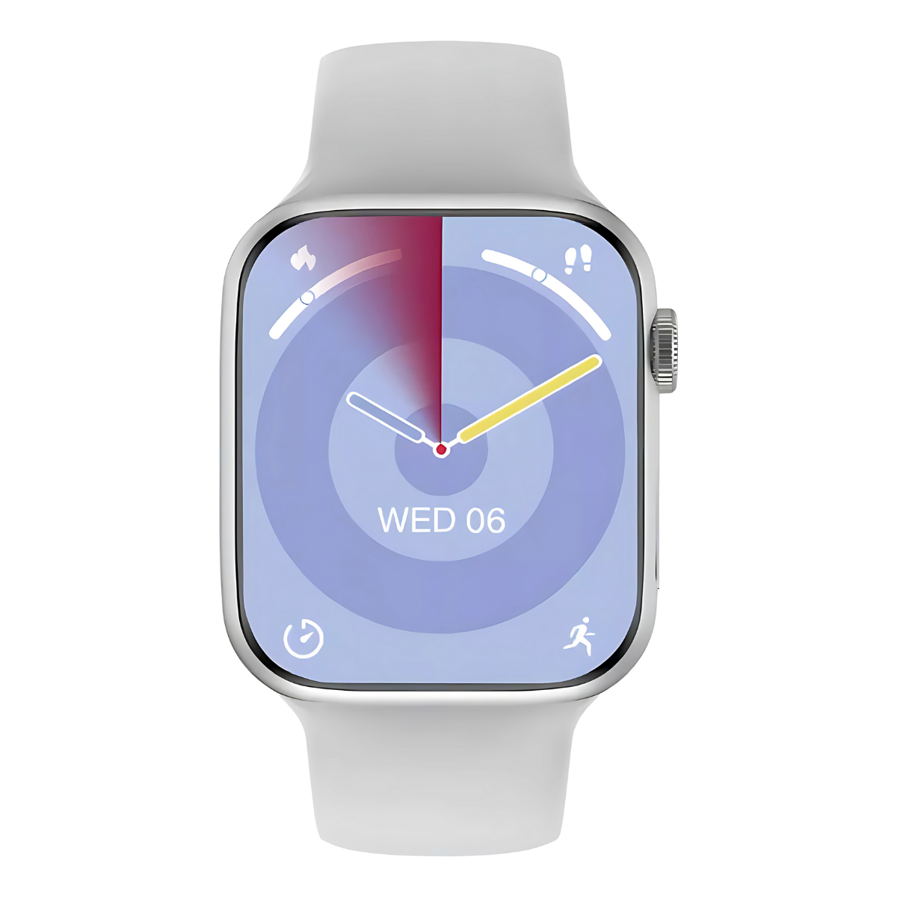
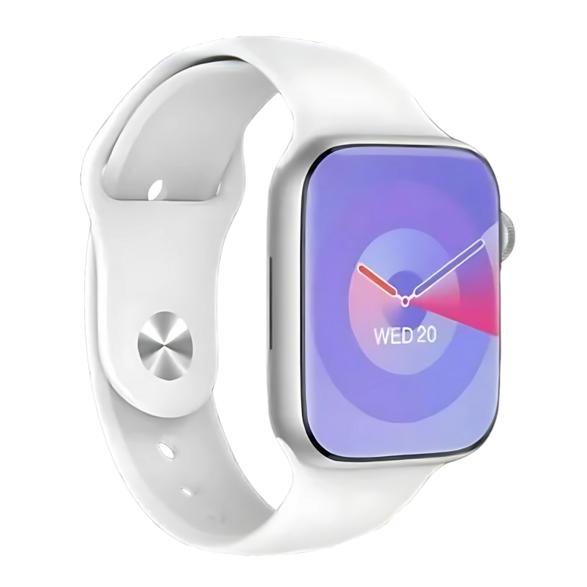
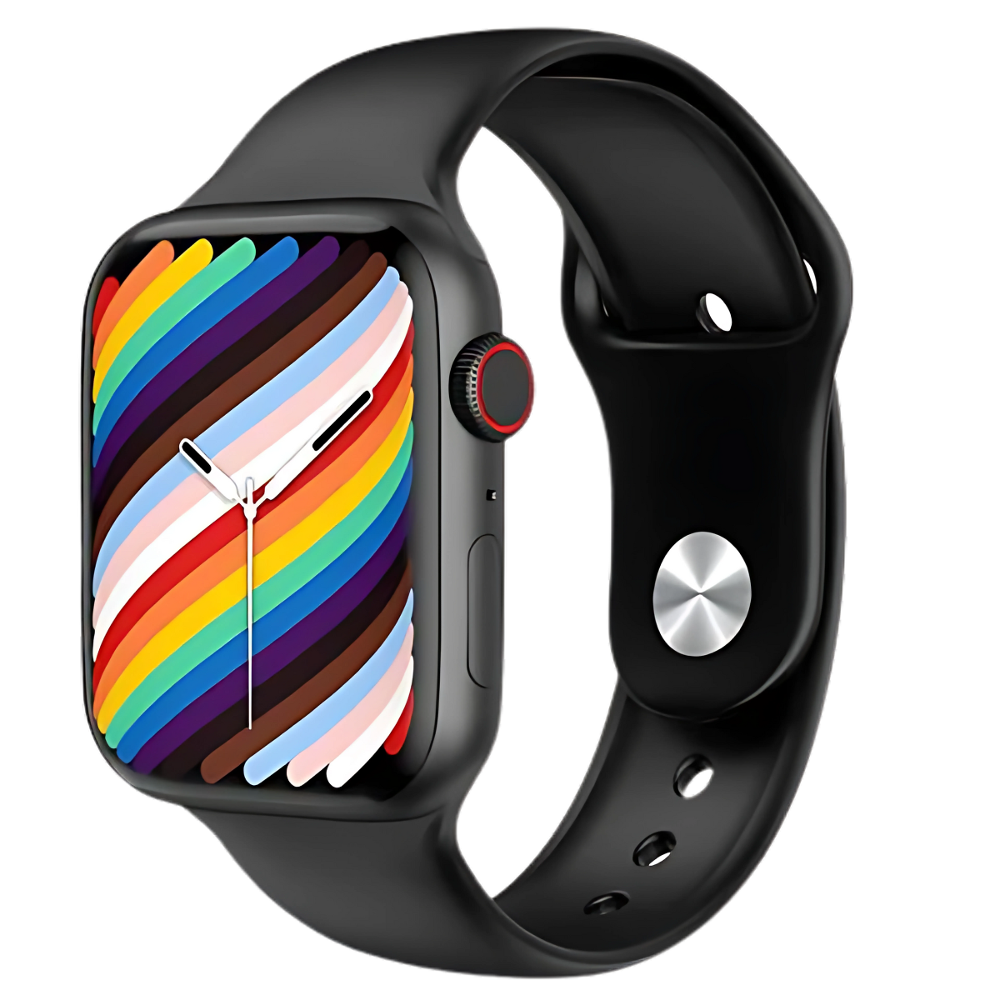
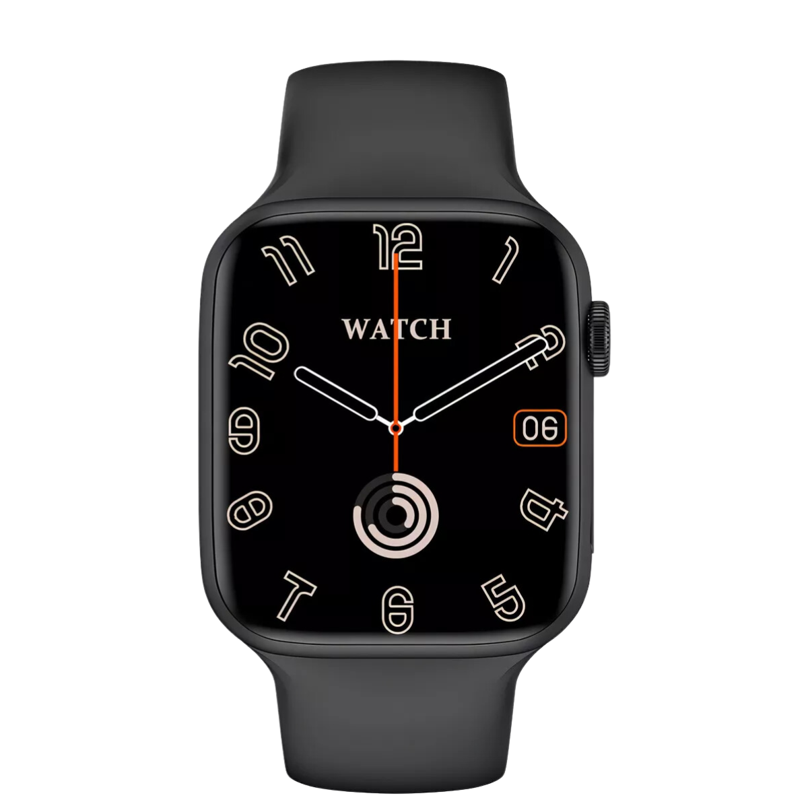
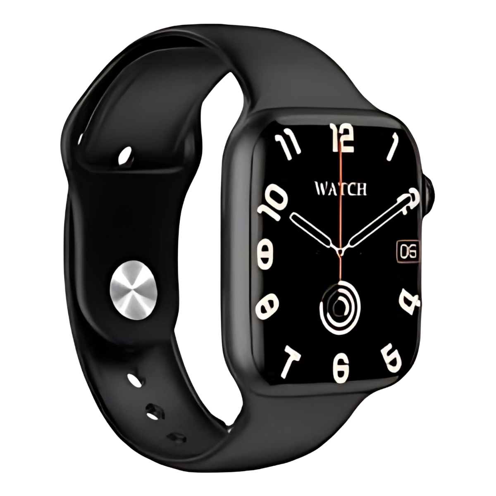
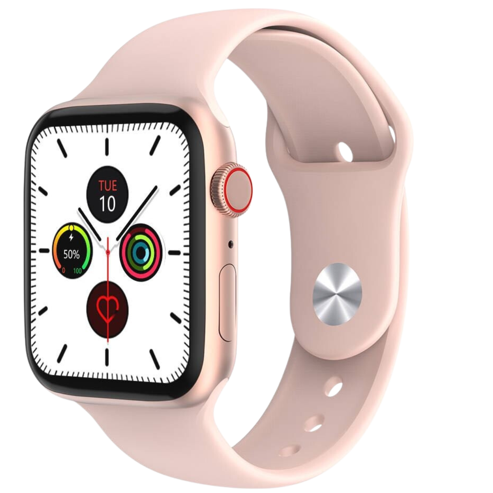
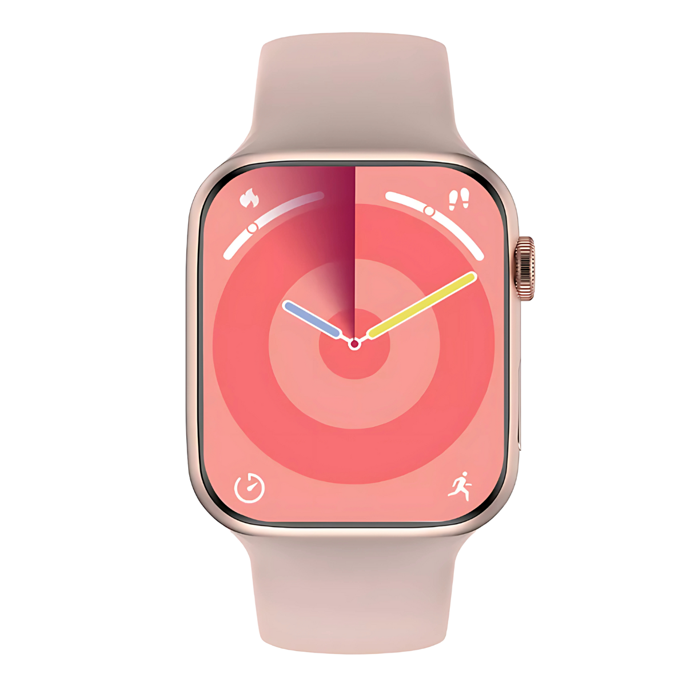
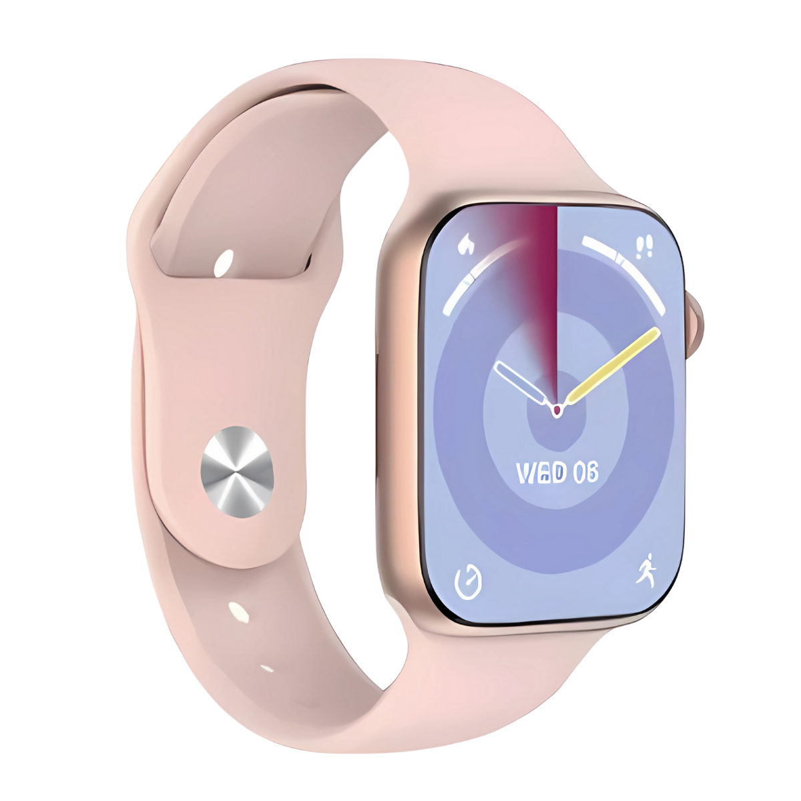

Relógios Exclusivos para Todos os Estilos


Design clássico e atemporal em branco, ideal para qualquer ocasião.



Elegância e estilo moderno em preto, para um visual sofisticado.



A sofisticação do rose, perfeito para um toque delicado e luxuoso.